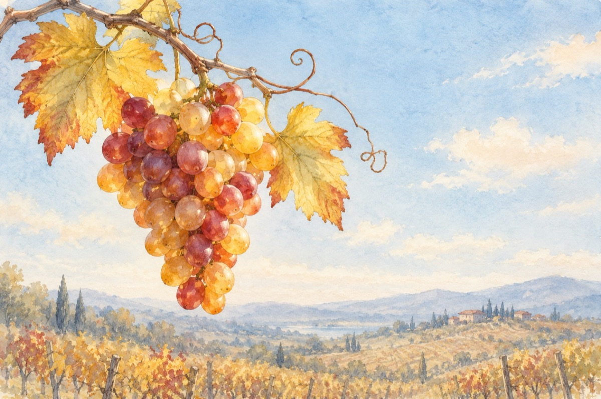

Bucuria ciorchinilor
Și iată că e prima oară
Când dau ciorchinii ca să iasă
Și speră ca în plină toamnă
Să scoată gust de tămâioasă.
S-atârne rodul în butuci
Cu boaba mare dată-n pârg
Să curgă vinul prin uluci
Dând gust pastramelor din târg
Și vinul să geamă-n butoaie
Cu răbufniri scurte de damf
Cu-a soarelui față bălaie
Să-i faci la tristețe-un dur perdaf.
Scăldat în mici și cu muștar
Să bântuie pe sub mustață
Un rubiniu sau chihlimbar
Dând tonul mai intens la viață.
Iar la ciorchine preaslăvit
Cu seva-n damigeană
Cu visul ce ți s-a-mplinit
Triumfi în plină zi de toamnă!
Vasile Groza